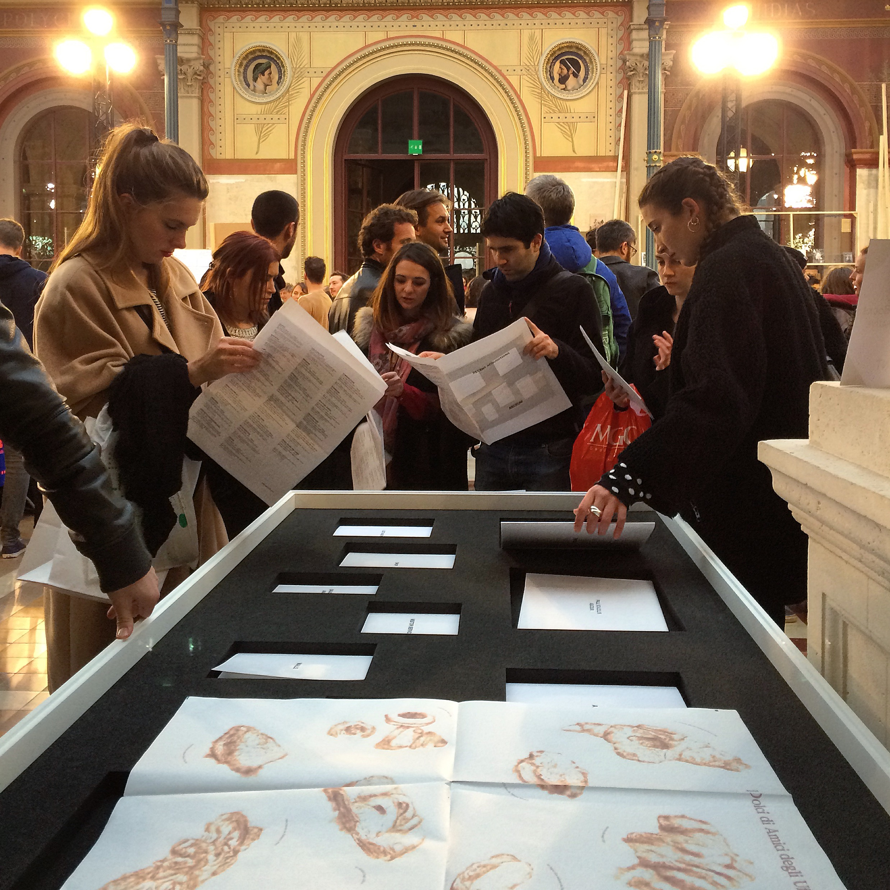
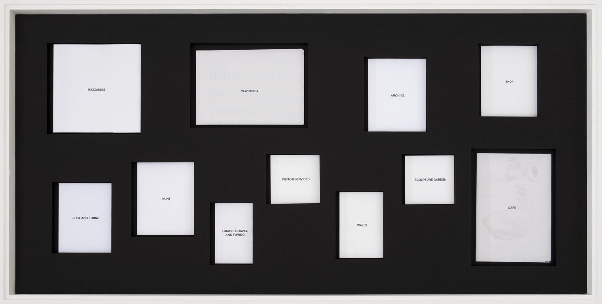
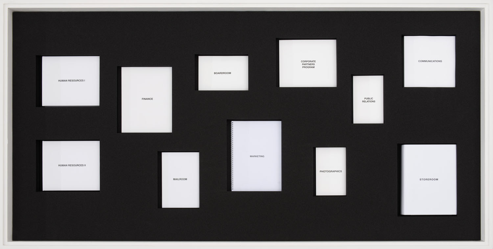
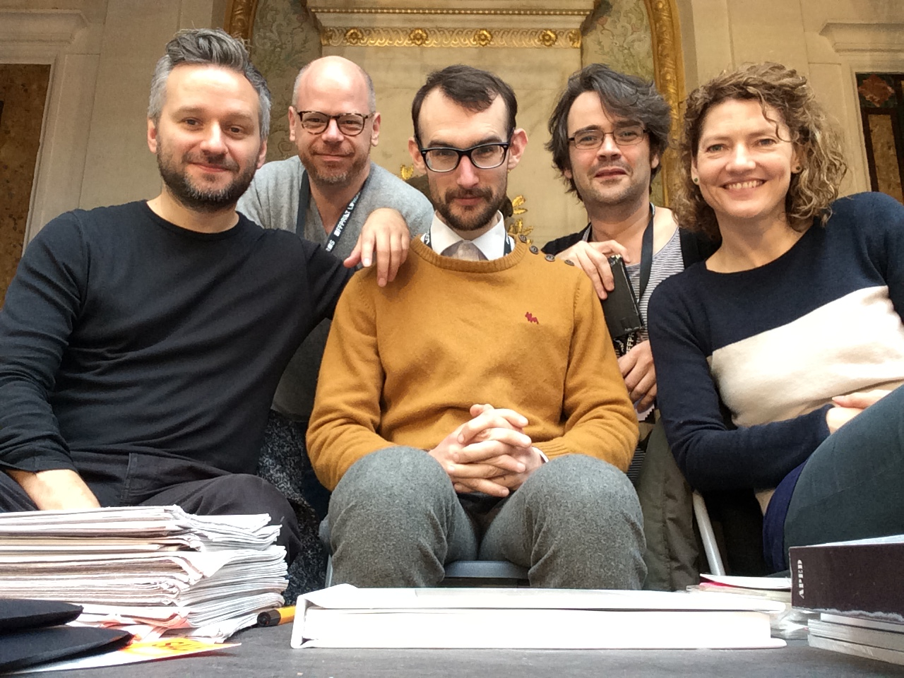

NEW MEDIA, a 32-page newsprint publication that was a contribution to the collaborative project ABCEUM
ABCEUM was a collaborative project by ABC (Artists’ Book Cooperative) that re-imagined the museum as a book installation. Each “room” or department of the museum is a print-on-demand artist’s book of a different size and material. Assembled, the 22 self-published books constitute a variable floor-plan which visitors can wander through. The ABCEUM publications launched at Printed Matter’s NY Art Book Fair in 2014. Special museum display cases were constructed for the project and it went on to be exhibited at (and acquired by) various institutions, including Brighton Photo Biennial, Offprint Paris, FRAC Poitou-Charentes, and Bavarian State Library.
My room was not a room at all but the museum’s presence on the network, which I imagined as NEW MEDIA, a 32-page print-on-demand newsprint publication that documents the first 420 videos posted to YouTube by Webdriver Torso.
ABC Contributors: Erik Benjamins,
Eric Doeringer,
Fred Free,
Oliver Griffin,
Mishka Henner,
Tanja Lažetić,
Jonathan Lewis,
EJ Major,
Mocksim,
Louis Porter,
Andreas Schmidt,
Travis Shaffer,
Paul Soulellis,
Wil van Iersel,
Duncan Wooldridge,
Hermann Zschiegner
NEW MEDIA (ABCEUM) Newsprint publication 10.4 in. x 15.0 in.
32 pages, loose folio
Edition of 20
2014

ABCEUM at the École des Beaux-Arts, Paris for Offprint Paris, 2014



ABC members Mishka Henner, Paul Soulellis, Oliver Griffin, Louis Porter, and EJ Major at Offprint Paris, 2014